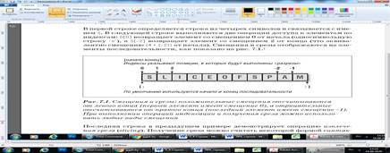
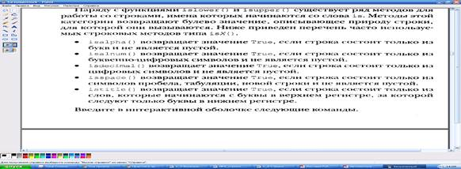

ТЕОРЕТИЧЕСКИЙ МАТЕРИАЛ:
Cтроки - простой тип данных наряду с целыми и вещественными числами. Cтрока – это последовательность символов, заключенных в одинарные или двойные кавычки.
В Python нет символьного типа, т. е. типа данных, объектами которого являются одиночные символы. Однако язык позволяет рассматривать строки как объекты, состоящие из подстрок длинной в один и более символов. При этом, в отличие от списков, строки не принято относить к структурам данных. Видимо потому, что структуры данных состоят из более простых типов данных, а для строк в Python нет более простого (символьного) типа.
С другой стороны, строка – это упорядоченная последовательность элементов. Следовательно, из нее можно извлекать отдельные символы и срезы.
Длина строки ограничена лишь объемом ОП компьютера. Строки поддерживают обращение к элементу по индексу, получение среза, конкатенацию (оператор +), повторение (оператор *), поверку на вхождение (операторы in и not in).
Строки относятся к неизменяемым типам данных. Поэтому практически все строковые методы в качестве значения возвращают новую строку, т.е. можно получить символ по индексу, но изменить его будет нельзя.
Python поддерживает следующие строковые типы:
str – Unicode-строка. При выводе Unicode-строку необходимо преобразовать в последовательность байтов в какой-либо кодировке (UTF-8, UTF-16, UTF-32). Этот тип следует использовать для всех текстовых данных.
bytes – неизменяемая последовательность байтов. Каждый элемент последовательности может хранить целое число от 0 до 255, которое обозначает код символа. Поддерживает большинство строковых методов и выводится как последовательность символов.
! Доступ по индексу возвращает целое число, а не символ.
Объект типа bytes может содержать как однобайтовые, так и многобайтовые символы. Функции и методы строк некорректно работают с многобайтовыми кодировками.
bytearray - изменяемая последовательность байтов. В отличие от типа bytes позволяет изменять элементы по индексу и содержит дополнительные методы, позволяющие удалять и добавлять элементы.
Типы bytes и bytearray следует задействовать для записи двоичных данных, например изображений, и промежуточного хранения строк.
Создать строку можно следующими способами:
а) с помощью функции
str([<объект>[, <кодировка>[, <обработка ошибок>]]]).
Если параметры не указаны вообще, возвращается пустая строка.
Например, str(), str([1,2]), str((1, 2)), str((‘x’:1))
В параметре <обработка ошибок> могут быть указаны значения ‘strict’ (возбуждение исключения при ошибке), ‘replace’ (замена неизвестного символа кодом \uFFFD) или ‘ignore’ (игнорирование неизвестного символа).
б) указав строку между апострофами или двойными кавычками. Чтобы специальный символ выводился как есть, его необходимо экранировать с помощью слэша. Например, print(‘строка1\\nСтрока2’) получим ‘строка1\nСтрока2’
в) указав строку между утроенными апострофами или утроенными кавычками. Такие объекты можно разместить на нескольких строках. Выражения внутри таких строк не выполняются, поэтому их часто используют для комментирования больших фрагментов.
Если перед строкой разместить модификатор r, то специальные символы внутри строки выводятся как есть. Такие неформатированные строки удобно использовать при указании пути к файлу.
Например, print(r”C:\Python38\lib\site-packages”). Если модификатор не указать, то все слэши необходимо экранировать print(r”C:\\Python38\\lib\\site-packages”).
Специальные символы:
Это комбинации знаков, обозначающих служебные или непечатаемые символы, которые невозможно вставить обычным способом. Следующие символы допустимо вставлять в строки, перед которыми нет модификатора r.
\n – перевод строки
\r – возврат каретки
\t – знак табуляции
\v – вертикальная табуляция
\a – звонок
\b – забой
\f – перевод формата
\0 – нулевой символ (не является концом строки)
Операции над строками
Как и все последовательности строки поддерживают обращение к элементу по индексу, получение среза, конкатенацию, повторение и проверку на вхождение, если в качестве индекса указать отрицательное значение s[-i], идет обращение к элементу, индекс которого равен длина строки [len(s) – i].
Строки – неизменяемый тип данных. Чтобы выполнить изменение, можно воспользоваться операцией извлечения среза, который возвращает указанный фрагмент строки. Формат операции получения среза:
[<начало> : <конец> : <шаг>]
Все параметры необязательны. Нет <начало> - используется 0, нет <конец> - возвращается фрагмент до конца строки, нет <шаг> - используется значение 1.
Например:
s[:] – возвращается фрагмент от позиции 0 до конца строки, т.е. получаем копию строки
s[::-1] – вывод символов в обратном порядке
“a” + s[1:] – заменим нулевой символ строки
s[:-1] – удалим последний символ
s[0:1] – получим 0-ой символ в строке. Элемент с индексом [1] не входит в диапазон
s[-1:] – получим диапазон от len(s)-1 до конца строки
s[2:5] –выведем символы с индексами 2, 3, 4.
Смещения и срезы: положительные смещения отсчитываются от левого конца (первый элемент имеет смещение 0), а отрицательные отсчитываются от правого конца (последний элемент имеет смещение –1).

Значение смещения слева от двоеточия обозначает левую границу (включительно), а справа – верхнюю границу (она не входит в срез).
|
Функция или операция |
Описание и результат |
|
len(s) |
Вычисляется длина строки s как число символов |
|
s1 + s2 |
Конкатенация. К концу строки s1 присоединяется строка s2, в результате получается новая строка, например, ’вы’ + ’года’ → ’выгода’ |
|
s ∗ n (или n ∗ s) |
n-кратное повторение строки s, в результате получается новая строка, например ’кан’∗2 → ’канкан’ |
|
s [ i ] |
Выбор из s элемента с номером i, нумерация начинается с 0 (первый элемент имеет номер 0). Результатом является символ. Если i < 0, отсчёт идёт с конца (первый символ строки имеет номер 0, последний имеет номер −1). Пример: s= ’дерево’ s [2] → ’р’ s[−2] → ’в’ |
|
s [ i : j :k] |
Срез. Подстрока, содержащая символы строки s с номерами от i до j с шагом k (элемент с номером i входит в итоговую подстроку, а элемент с номером j уже не входит). Если k не указан (использован вариант s [ i : j ]), то символы идут подряд (равносильно s [ i : j :1] ). Примеры: s=’derevo’ s [3:5] → ’ev’ s [1:5:2] → ’ee’ |
|
min(s) |
Определяет и выводит (возвращает) символ с наи- меньшим значением (кодом – номером в кодовой таблице) Пример: s=’derevo’ min(s) → ’d’ |
|
max(s) |
Возвращает символ с наибольшим значением (кодом) Пример: s=’derevo’ max(s) → ’v’ |
Чтобы соединить строку с числом необходимо применить преобразование типа с помощью функции str(): ‘string’ + str(10)
Строки, как объекты Python, обладают методами (т.е. функциями, которые выполняют сами объекты). Основные методы перечислены в следующей таблице. Пусть строка, к которой применяются эти методы, называется s1.
|
Метод |
Описание и результат |
|
s1 . center(n) |
Возвращается строка s1, дополненная пробелами справа и слева до ширины в n символов. Исходная строка не изменяется. Если n ≤ len(s1), пробелы не добавляются. Пример: s1=’Zoom−Zoom’ s1 . center(15) → ’␣␣␣Zoom−Zoom␣␣␣’ |
|
s1 . ljust (n) |
Строка s1 выравнивается по левому краю (дополняется пробелами справа) в пространстве шириной n символов. Если n < len(s1), пробелы не добавляются. Пример: s1=’Zoom−Zoom’ s1 . ljust (15) → ’Zoom−Zoom␣␣␣␣␣␣’ |
|
s1 . rjust (n) |
Строка s1 выравнивается по правому краю (дополняется пробелами слева) в пространстве шириной n символов. Если n < len(s1), пробелы не добавляются. Пример: s1=’Zoom−Zoom’ s1 . rjust (15) → ’␣␣␣␣␣␣Zoom−Zoom’ |
|
s1.count(s [, i , j ]) |
Определяется количество вхождений подстроки s в строку s1. Результатом является число. Можно указать позицию начала поиска i и окончания поиска j (по тем же правилам, что и начало и конец среза). Примеры: s1=’abrakadabra’ s1.count(’ab’) → 2 s1.count(’ab’,1) → 1 s1 . count(’ab’,1,−3) → 0, потому что s1[1:−3] → ’brakada’ |
|
s1 . find (s [, i , j ]) |
Определяется позиция первого (считая слева) вхождения подстроки s в строку s1. Результатом является число. Необязательные аргументы i и j определяют начало и конец области поиска (как в предыдущем случае). Пример: s1=’abrakadabra’ s1 . find (’ br ’) → 1 |
|
s1 . rfind (s [, i , j ]) |
Определяется позиция последнего (считая слева) вхождения подстроки s в строку s1. Результатом является число. Необязательные аргументы i и j определяют начало и конец области поиска (как в предыдущем случае). Пример: s1=’abrakadabra’ s1 . rfind (’ br ’) → 8 |
|
s1 . strip () |
Создаётся копия строки, в которой удалены пробелы в начале и в конце (если они есть или образовались в результате каких-то операций). Пример: s1=’␣breKeKeKeKs␣’ s2=s1. strip () s2 → ’breKeKeKeKs’ |
|
s1 . lstrip () |
Создаётся копия строки, в которой удалены пробелы в начале (если они есть или образовались в результате каких-то операций). Пример: s1=’␣breKeKeKeKs␣’ s2=s1. lstrip () s2 → ’breKeKeKeKs’ |
|
s1 . rstrip () |
Создаётся копия строки, в которой удалены пробелы в конце (если они есть или образовались в результате каких-то операций). Пример: s1=’␣breKeKeKeKs␣’ s2=s1. rstrip () s2 → ’breKeKeKeKs’ |
|
s1 . split ([<разделитель>[, <лимит>]) |
Разделяет строку на подстроки (слова) по указанному разделителю и добавляет эти подстроки (слова) в список, который возвращается в качестве результата. Если разделитель не указан, используется пробел. Второй параметр задает количество подстрок в результирующем списке. Пример: s1=’word1 word2 word3’ s1.split() → [’word1’ ‘word2’ ‘word3’] s1= 'red blue orange white’ s1.split() → ['red', 'blue', 'orange', 'white'] Метод split() может принимать необязательный аргумент-строку, указывающей по какому символу или подстроке следует выполнить разделение: s.split('e') ['r', 'd blu', ' orang', ' whit', ''] '40030023'.split('00') ['4', '3', '23']
|
|
([<разделитель>). join(s1) |
Метод строк join() выполняет обратное действие. Он формирует из списка строку. Поскольку это метод строки, то впереди ставится строка-разделитель, а в скобках — передается список: '-'.join(sl) 'red-blue-orange-white' Если разделитель не нужен, то метод применяется к пустой строке: ''.join(sl) 'redblueorangewhite'
|
|
s1 . replace (s2 , s3 [, n]) |
Создаётся новая строка, в которой фрагмент (подстрока) s2 исходной строки заменяется на фрагмент s3. Необязательный аргумент n указывает количество замен (если требуется заменить не все фрагменты). Пример: s1=’breKeKeKeKs’ ss=s1.replace(’Ke’, ’XoXo’,2) ss → ’breXoXoXoXoKeKs’ |
|
s1 . capitalize () |
Создаётся новая строка, в которой первая буква исходной строки становится заглавной (прописной), а все остальные становятся маленькими (строчными). Пример: s1=’breKeKeKeKs’ s2=s1. capitalize () s2 → ’Brekekekeks’ |
|
s1 .swapcase() |
Создаётся новая строка, в которой прописные буквы исходной строки заменяются на строчные и наоборот. Пример: s1=’breKeKeKeKs’ s2=s1.swapcase() s2 → ’BREkEkEkEkS’ |
|
s1 .upper() |
Создаётся новая строка, в которой все буквы исходной строки становятся заглавными (прописными). Пример: s1=’breKeKeKeKs’ s2=s1.upper() s2 → ’BREKEKEKEKS’ |
|
s1 . lower() |
Создаётся новая строка, в которой все буквы исходной строки становятся маленькими (строчными). Пример: s1=’breKeKeKeKs’ s2=s1.lower() s2 → ’brekekekeks’ |
Метод format()
Метод format() применяется к строкам. Сформированная строка передается в функцию вывода.
Возможности format() широкие, рассмотрим основные.
size1 = "length - {}, width - {}, height - {}"
size1.format(3, 6, 2.3)
получим: 'length - 3, width - 6, height — 2.3'
Если фигурные скобки исходной строки пусты, то подстановка аргументов идет согласно порядку их следования. Если в фигурных скобках строки указаны индексы аргументов, порядок подстановки может быть изменен:
size2 = "height - {2}, length - {0}, width - {1}"
size2.format(3, 6, 2.3)
получим: 'height - 2.3, length - 3, width - 6'
Кроме того, аргументы могут передаваться по слову-ключу:
info = "This is a {subj}. It's {prop}."
info.format(subj="table", prop="small")
получим: "This is a table. It's small."
Пример форматирования вещественных чисел (3.33333 – 0-ой элемент, 10/6 – 1-ый элемент):
"{1:.2f} {0:.3f}".format(3.33333, 10/6)
получим: '1.67 3.333'
Операции форматирования строк могут выполняться двумя способами:
Выражения форматирования строк (основан на модели функции printf из языка C).
!!!! Выражение форматирования всегда создает новую строку, а не изменяет строку, расположенную в левой части.
>>> pupil = "Ben"
>>> old = 16
>>> grade = 9.2
>>> print("It's %s, %d. Level: %f" % (pupil, old, grade))
It's Ben, 16. Level: 9.200000
Здесь вместо трех комбинаций символов %s, %d, %f подставляются значения переменных pupil, old, grade.
>>> “%d %s %d you” % (1, ‘spam’, 4)
‘1 spam 4 you’
Обратите внимание: когда вставляется более одного значения, в правой части выражения их необходимо сгруппировать с помощью круглых скобок. Оператор форматирования % ожидает получить справа либо один объект, либо список объектов.
>>> “%s -- %s -- %s” % (42, 3.14159, [1, 2, 3])
‘42 -- 3.14159 -- [1, 2, 3]’
В левой части выражения всем значениям соответствует спецификатор %s, который соответствует операции преобразования в строку.
Метод форматирования строк более уникальный для языка Python.
>>>age = 26
>>>name = 'Swaroop'
>>>print('Возраст {0} - {1} лет'.format(name, age))
>>>print('Возраст {} - {} лет'.format(name, age)) #без указания цифр
#с именами именованных аргументов (например, {food}).
>>> ‘{motto}, {0} and {food}’.format(42, motto=3.14, food=[1, 2])
‘3.14, 42 and [1, 2]’
|
>>> ‘{0:.2f}’.format(1.2345) # Строковый метод ‘1.23’ >>> format(1.2345, ‘.2f’) # Встроенная функция ‘1.23’ >>> ‘%.2f’ % 1.2345 # Выражение форматирования ‘1.23’ |
Таблица, в которой в компактной форме представлены возможности работы со строками:
|
Операция |
Интерпретация |
|
S = ‘’ |
Пустая строка |
|
S = “spam’s” |
Строка в кавычках |
|
S = ‘s\np\ta\x00m’ |
Экранированные последовательности |
|
S1 + S2 |
Конкатенация |
|
S * 3 |
Повторение |
|
S[i] |
Обращение к символу по индексу |
|
len(S) |
Длина |
|
“a %s parrot” % kind |
Выражение форматирования строки |
|
“a {0} parrot”.format(kind) |
Строковый метод форматирования |
|
S.find(‘pa’) |
Вызов строкового метода: поиск |
|
S.rstrip() |
Удаление ведущих и конечных пробельных символов |
|
S.replace(‘pa’, ‘xx’) |
Замена |
|
S.split(‘,’) |
Разбиение по символу-разделителю |
|
S.isdigit() |
Проверка содержимого |
|
S.lower() |
Преобразование регистра символов |
|
S.upper() |
Преобразование регистра символов |
|
S.isupper() |
Возвращает true, если в строке хотя бы одна буква в верхнем (или нижнем) регистре |
|
S.islower() |
|
|
S.endswith(‘spam’) |
Проверка окончания строки |
|
‘spam’.join(strlist) |
Сборка строки из списка |
|
S.encode(‘latin-1’) |
Кодирование строк Юникода |
|
S.count(T) |
Возвращает число вхождений строки T внутри строки S |
Примеры использования строковых методов (класса str):
name = 'New string' # Это объект строки
# начинается ли строка с некоторой заданной подстроки?
if name.startswith('Ne'):
print('Да, строка начинается на "Ne"')
# является ли некоторая строка частью данной строки?
if 'i' in name:
print('Да, строка содержит букву "i"')
#метод find используется для определения позиции данной подстроки в строке;
#возвращает -1, если подстрока не обнаружена.
if name.find('ing') != -1:
print('Да, она содержит строку "ing"')
# метод join - для объединения элементов последовательности с указанной
#строкой в качестве разделителя между элементами
delimiter = '_*_'
mylist = ['Бразилия', 'Россия', 'Индия', 'Китай']
print(delimiter.join(mylist))
‘Бразилия_*_Россия_*_Индия_*_Китай’
# еще один пример с join: склеить три строки
>>> names = ["John", "Paul", "Ringo", "George"]
>>> ", ".join(names)
'John, Paul, Ringo, George'
# метод replace заменяет подстроку
S = ‘spammy’
S = S.replace(‘mm’, ‘xx’)
print(S) # получим ‘spaxxy’
# метод split преобразует строку в список подстрок, окружающих строки-разделители
line = ‘bob,hacker,40’
line.split(‘,’) # получим [‘bob’, ‘hacker’, ‘40’], разделитель запятая
#Разделители могут содержать более одного символа:
line = “i’mSPAMaSPAMprogrammer”
line.split(“SPAM”) # получим [“i’m”, ‘a’, ‘programmer’]
>>> 'My name is Simon'.split()
['My', 'name', 'is', 'Simon']
Если необходимо заменить одну подстроку фиксированного размера, которая может появиться в любом месте, можно также выполнить операцию замены или отыскать подстроку с помощью метода find и затем воспользоваться операциями извлечения подстроки:
>>> S = ‘xxxxSPAMxxxxSPAMxxxx’
>>> where = S.find(‘SPAM’) # Поиск позиции
>>> where # Подстрока найдена со смещением 4
4
>>> S = S[:where] + ‘EGGS’ + S[(where+4):]
>>> S
‘xxxxEGGSxxxxSPAMxxxx’
Если нужно производить множество изменений длинных строк, вы можете повысить производительность программы, преобразовав строку в объект, который допускает внесение изменений:
>>> S = ‘spammy’
>>> L = list(S)
>>> L
[‘s’, ‘p’, ‘a’, ‘m’, ‘m’, ‘y’]
Встроенная функция list (или функция-конструктор объекта) создает новый список из элементов любой последовательности – в данном случае «разрывая» строку на символы и формируя из них список, элементы которого можно изменять:
>>> L[3] = ‘x’ # Этот прием допустим для списков, но не для строк
>>> L[4] = ‘x’
>>> L
[‘s’, ‘p’, ‘a’, ‘x’, ‘x’, ‘y’]
Если после внесения изменений необходимо выполнить обратное преобразование (чтобы, например, записать результат в файл), можно использовать метод join, который «собирает» список обратно в строку:
>>> S = ‘’.join(L)
>>> S
‘spaxxy’
Пример обработки строк: с клавиатуры вводится строка, содержащая имя, отчество и фамилию человека, например: Василий Алибабаевич Хрюндиков. Каждые два слова разделены одним пробелом, в начале строки пробелов нет. В результате обработки должна получиться новая строка, содержащая фамилию и инициалы: Хрюндиков В.А.
print ( "Введите имя, отчество и фамилию:" )
s = input()
fio = s.split()
s = fio[2] + " " + fio[0][0] + "." + fio[1][0] + "."
print ( s )
Запись fio[0][0] обозначает «0-й символ из 0-го элемента списка fio», то есть, первая буква имени. Аналогично fio[1][0] – это первая буква отчества.
Строковые методы is… удобно применять для проверки допустимости введенных пользователем данных:

Пример: запрос пароля, содержащего только буквы и цифры
while True:
print('Введите новый пароль (только буквы и цифры')
password = input()
if password.isalnum():
break
print('Пароль должен содержать только буквы и цифры')